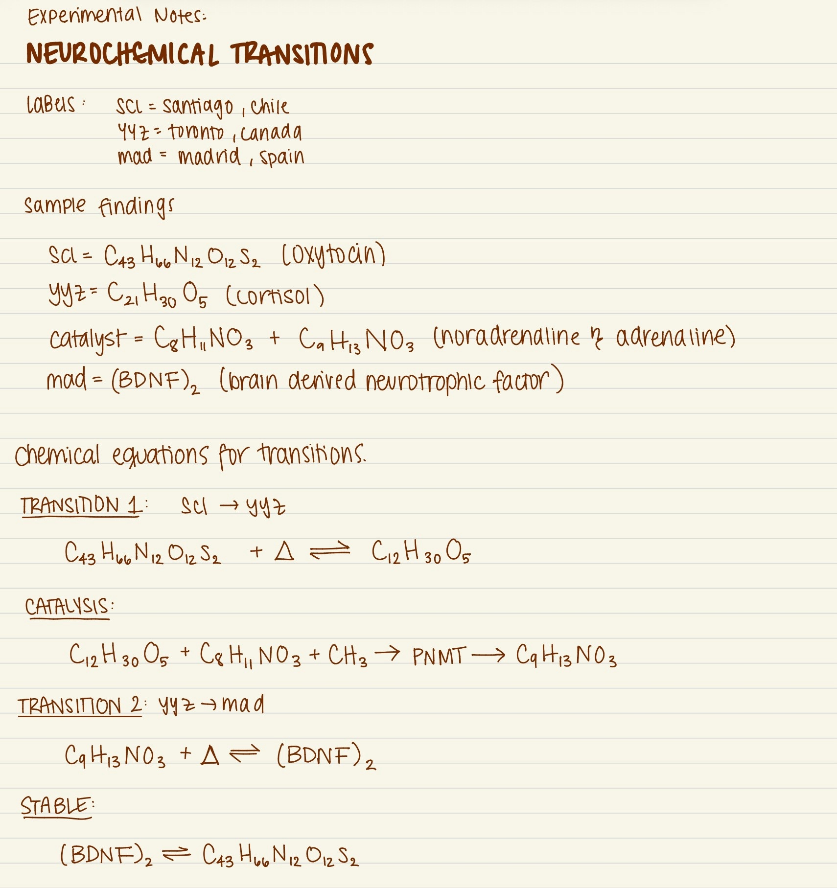

ENTER
At 2:13 AM, months of built-up stress tipped over. The brain's alarm centre (the locus coeruleus) flooded the body with noradrenaline, and the adrenal glands turned it into adrenaline: the enzyme PNMT adds one methyl group.
Together they set off fight-or-flight with no real danger present: a racing, pounding heart, fast shallow breathing, trembling, sweating, tunnel vision and the feeling of losing control. It peaks within minutes, then slowly fades, leaving exhaustion behind.
Next: place the MAD slide on the microscope.
